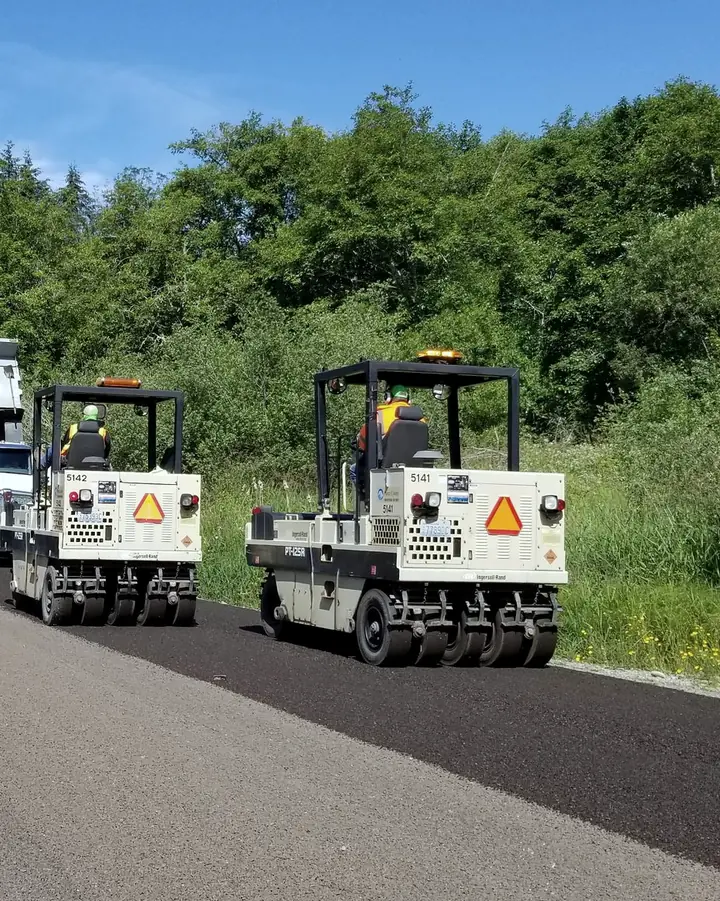

01
Būvdarbu vadīšanaРуководство работами
Organizējam ceļa būvdarbus: darbu secību, tehniku, materiālu piegādes un termiņus. Kārtojam būvdarbu žurnālu.Организуем дорожные работы: очерёдность, технику, поставки материалов и сроки. Ведём журнал работ.